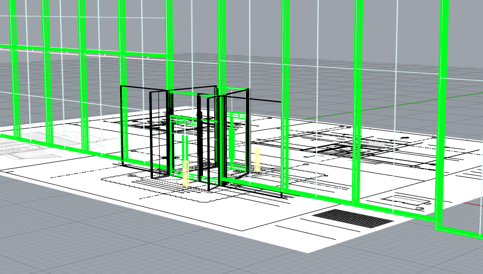
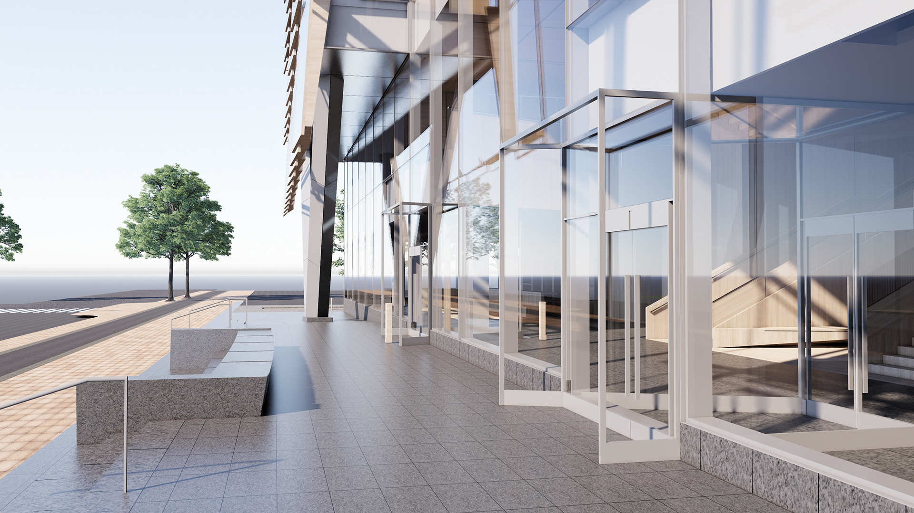
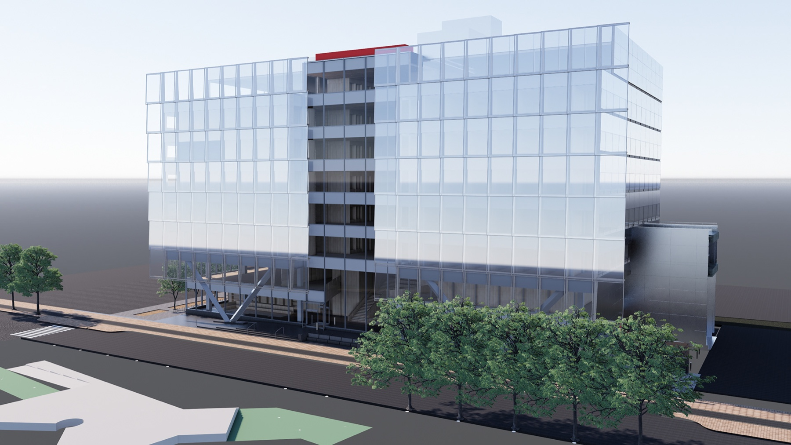
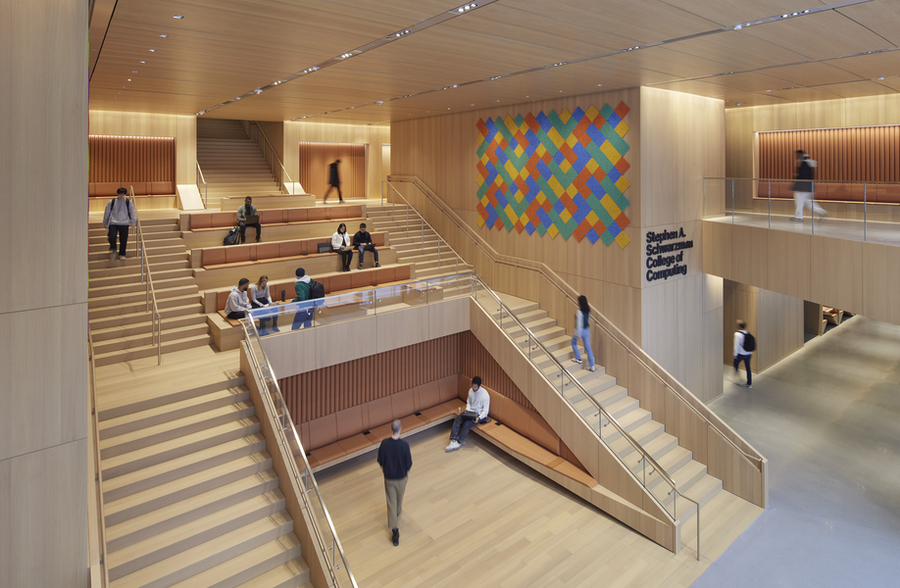

MIT Schwarzman
Architectural Design, Interior
SOM
2022
Architectural Design Intern
The Schwarzman College of Computing is a state-of-the-art hub for education, research, and collaboration, bringing together computer science and AI with disciplines including architecture, engineering, business, and the humanities and arts. As part of the architectural design team, I contributed to the development and refinement of the building’s façade, entry sequence, lobby, interior, and core design. I conducted an in-depth analysis of the interior and exterior vestibules by mapping shop drawings to 3D proportions. Additionally, my work in coordinating the project’s material selection and color palette helped maintain a cohesive visual language throughout the building.
Challenge
The Schwarzman College of Computing needed to hold computer science and AI, architecture, engineering, business, and the humanities and arts, while maintaining a cohesive facade, entry sequence, lobby, and interior together. While developing the architectural plans, the interior and exterior vestibules were incredibly complex in which shop drawings alone did not make their proportions and details easy to verify.

Approach
I mapped the shop drawings for the interior and exterior vestibules into 3D proportions to check them against the design intent before construction. I also examined the project’s material selection and color palette to look for stronger alternatives.
Alongside that analysis, I looked closely at the building's entry sequence and glass facade detailing to understand how the design would actually read at ground level.


Solution
As part of the architectural design team, I contributed to the development and refinement of the building's facade, entry sequence, lobby, interior, and core design through the Rhino model. I also helped coordinate material selection and color palette choices through mood boards to keep the visual language consistent throughout.
Outcome
The completed Schwarzman College of Computing brings its intended disciplines into one building, with an interior, facade, and material palette designed to read as a single, cohesive space.
